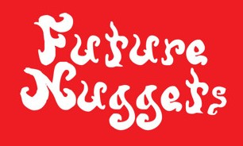

Future Nuggets is a Bucharest label endeavoured with searching a local psychedelic scene informed by the past but made for the times to come. In the upside-down music world we encounter shadows of an industry that never fully expired yet never consistently existed. A realm where reality is made out of fictions, out of fragments, rumours, populated sometimes only by names with no bodies. Sole reminders of a future endlessly coming together
It is a musical project involving a bunch of Romanian producers and musicians with a passion for obscure, unheard bits and pieces of proto-manele, or the earliest 90s manele they can find. They dig around for old cassette tapes and spice them up with new voices, synths and electronic beats.
The Future Nuggets moniker includes artists such as Steaua de Mare, Plevna and Matteo Islandezu, all with a different sound and direction. Some of them, such as Islandezu, dive into manele and use it as inspiration for new, original tracks. Others, such as Plevna, stick to producing electronic tracks with just a hint of Oriental beats. Either way, the result is always enticing, like a psychedelic trip between the future and the past.
pagina aceasta e si ea work in progress